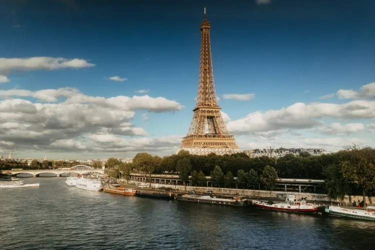

Bem-vindo a EuroTour
Veja os pontos mais visitados da Europa
Torre Eiffel, em Paris
Um dos monumentos mais emblemáticos e reconhecidos mundialmente, a Torre Eiffel é um dos maiores símbolos de Paris e da França como um todo. Sua história remonta ao final do século XIX, especificamente aos anos de 1887 a 1889, quando foi construída para ser a peça central da Exposição Universal de Paris, um evento que celebrava o centenário da Revolução Francesa.
Coliseu, em Roma

O Coliseu de Roma é um dos pontos turísticos na Europa e essencial em qualquer visita à capital italiana. De fora, nota-se que o monumento ainda se mostra capaz de permanecer em pé, resistindo às intempéries do tempo — inclusive terremotos.
Museus do Vaticano, no Vaticano

Embora seja sede da Igreja Católica e um marco religioso, o Vaticano é um dos principais pontos turísticos na Europa também por ser um local de grande importância cultural e artística..